Language-oriented
Robot Morphology Co-Design
Dat Nguyen · Basis Research Institute & Harvard SEAS

Work done with the R-ADA and MARA team at Basis
Roadmap
Where we are going, in five parts
The co-design problem
Given a task: design a morphology, and control that morphology to finish the task.
Karl Sims, Evolving Virtual Creatures (1994): the body and its brain evolved together.
A closer look: Evolving Virtual Creatures (Sims 1994)
├─ Node = body part { shape, joint }
│ └─ brain : Graph // of neurons
└─ Edge = connection { position, scale, reflect }
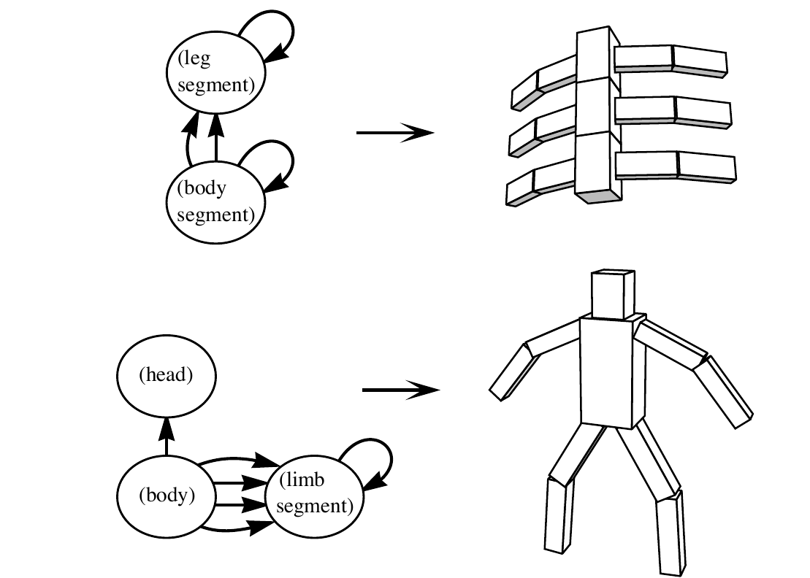
The objective is a hand-written fitness
No reward model, no gradient: one scalar per behavior, computed after a ~10s simulation
What the search produced
Many separate evolutions, each 50 to 100 generations; population 300, survival ratio 1/5
Swimming: paddlers, flippers, sinusoidal watersnakes.
Walking: lizard gaits, inchworms, hoppers.
Following: steering fins that turn toward the light (green target).
Needs 100-generation runs: about 3 hours on a 32-processor CM-5.
What have changed since then?
Dexterous manipulation
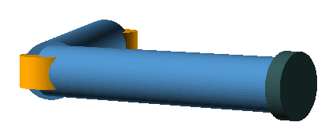
Realistic, manufacturable robots
So how are we doing co-design now?
2.1 Bi-level optimization
Neural networks let us train much more powerful controllers
DERL · different evolved bodies (DoF 14 to 20), each with an RL controller trained for it (Gupta et al. 2021)
2.2 Learned graph surrogates
Learning away the cost, 1 of 3: learn the evaluator. A grammar over robot graphs plus a GNN that predicts performance
Zhao et al., RoboGrammar (SIGGRAPH Asia 2020)
2.3 Differentiable simulation
Learning away the cost, 2 of 3: learn the controller (a neural network), by backpropagating through the physics
ELDiR (2024): a fresh policy trained per body, through differentiable simulation
2.4 LLM-driven morphology design
LLMs have a very good prior
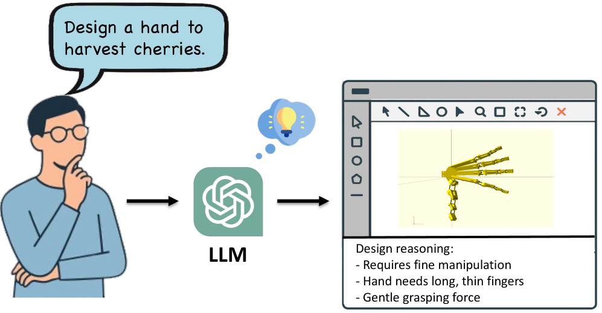
Figure: Qiao et al., Lang2Morph (arXiv:2509.18937)
Nearby LLM-era efforts: VLMgineer (robot tools), Text2Robot (body and gait from a text prompt), Text2Touch (LLM-designed rewards).
Each family learns away one role; the roles stay coupled. Co-design at LLM speed needs a substrate that holds all three.
What we still need: three desiderata
How we approach co-design
Two components, the next two parts of this talk
A programming language expressive enough to describe abstract components and realistic, manufacturable robots, uncertainty over the designs, and the control objective, all in one program.
An LLM framework that takes full advantage of that representation: constrained generation with native python type, support program synthesis, and a framework for context management with minimal effort.
RoboTL: describing morphology and control
A programming language expressive enough to describe abstract components and realistic, manufacturable robots, uncertainty over the designs, and the control objective, all in one program.
Why do we need a new representation?
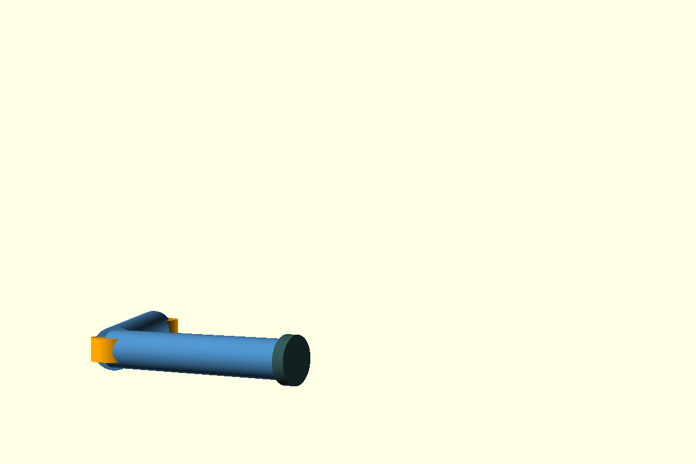
cube([10,10,60]);
translate([0,0,60])
rotate([0,90,0])
cylinder(d=8, h=12);
// ...200 more lines- Manufacturable, pixel-precise.
- No joints, sensors, control.
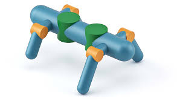
Robot -> Body Arm Arm
Arm -> Link Joint Arm
Joint -> Hinge | Slide
Link -> short | long
# graph + GNN eval- Compact, search-friendly.
- No grounded geometry / joint limits / ports.
@defcomponent
def OpenParametricHand(self,
params: HandParams | None = None,
n_fingers=4, n_thumbs=1,
unit_scale=0.001):
p = params or HandParams.default()
self.palm = Palm(p, n_fingers, n_thumbs, unit_scale)
self.fingers = [Digit(p.fingers[i], ...)
for i in range(n_fingers)]
# ... thumbs, tendons, actuators ...- Define shapes and their composition with CAD-level expressivity.
- Define controllable joints and constructs to support control.
- Support computations that are python native.
- Can be compiled down to MuJoCo for simulation.
Anatomy of a RoboTL component
@defcomponent
def Arm(self, link1L=0.120, link2L=0.1, linkDia=0.025):
"""Two-link arm with revolute joints."""
self.link1 = Cylinder(d=linkDia, h=link1L)
self.link2 = Cylinder(d=linkDia, h=link2L)
self.shoulder = HingeJoint(plateD=0.032)
self.elbow = HingeJoint(plateD=0.032)
self.wristFlange = Cylinder(d=0.032, h=0.005)
# Ports + welds compose the kinematic chain:
self.base = self.place(Port())
self._weld_shoulder = joints.Weld(self.base, self.shoulder.base)
self._weld_link1 = joints.Weld(self.shoulder.tip, self.link1.base)
# rotate elbow frame so its hinge axis points along Y
pose = Pose(rv=jnp.pi / 2 * jnp.array([0, 0, 1]))
self._weld_elbow = joints.Weld(self.link1.tip, self.elbow.base, pose=pose)
self._weld_link2 = joints.Weld(self.elbow.tip, self.link2.base, pose=~pose)
self._weld_wrist = joints.Weld(self.link2.tip, self.wristFlange.base)
self.tip = self.wristFlange.tip # downstream tasks reach with this port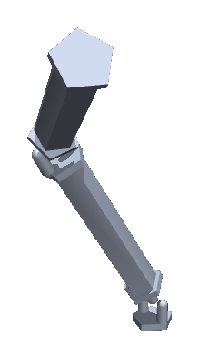
Describing uncertainty, and solving for it
@defcomponent
def CircularPalm(self, n_fingers=3, ...):
"""Fingers Dirichlet-sampled on the front
semicircle [-pi/2, +pi/2]."""
spread = math.pi
gaps = choose(dist.Dirichlet(jnp.ones(n_fingers + 1)))
finger_angles = -spread/2 + spread * jnp.cumsum(gaps[:-1])
_build_disc_palm(self, finger_angles=finger_angles, ...)An example of solved, circular-base LEAP hand
solve_init in action: three palm shapes, same program
Same LeapHand code, three palm choices. solve_init samples (or fixes) finger angles from each palm's prior, threads the constraints through the kinematic graph, and hands off to the MuJoCo compile.
Dirichlet over finger gaps; NUTS samples angles in [−π/2, π/2].
Fingers in a row along the palm's long axis. The original LEAP geometry.
Fingers fixed at three edge midpoints. Deterministic; no choose at all.
Each clip: 72-frame turntable rendered via the MuJoCo handler from the same LeapHand factory, only the palm constructor swapped.
solve_init solves only the initial configuration: it picks the choose values and the static pose that satisfy the constraints, then compiles. It does not move the hand. Motion comes from MPC (next).
Same factory, swap one component: fingertip variants
@defcomponent
def BallTip(self, radius_ratio: float = 1.0):
radius = radius_ratio * 10
base = translate(cube(20, 20, 10), [-10, -10, -10])
ball = translate(sphere(radius), [0, 0, radius - 10])
self.shape = shapes.union(base, ball) # geometry (CSG)
self.material = POLYCARBONATE # inertia + CAD
self.base = self.place(Port(), Pose(pos=face(base, "-z").center))
# HookTip carves the hook with a boolean void:
self.shape = shapes.union(base, shapes.difference(tip, void))
# a tip plugs into the finger through one typed slot:
def Finger(self, tip: Component | None = None):
self.tip = CapsuleTip() if tip is None else tip
joints.Weld(self.tip.base, self.distal_motor.hinge.tip)Condensed from robotl/examples/leap_hand.py (scale and units elided).
shapes cube · sphere · capsule
union / difference CSG
scale / translate place geometry
Port · Pose · face attach points
material inertia + CAD
joints.Weld fix tip to finger
self.place position a port
No changes to the palm prior, no re-solving by hand. solve_init re-runs end-to-end for each tip variant.
What unlocks cheap codesign: MPC + a loss interface
Model predictive control: plan a short horizon with the model, execute, replan
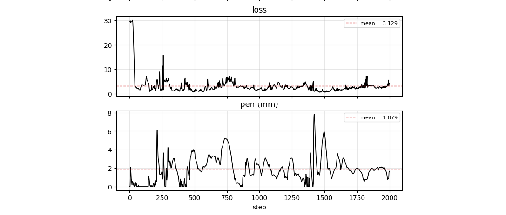
LEAP hand, MPPI 64 × 4 rounds, 10 seconds. The loss falls from ~30 and holds near 3 while contact stays live. About 199 ms/step on CPU.
@defcomponent
def CubeSpinEnv(self, robot: Component, spin_axis=...):
...
world_angvel = self.cube.axes @ self.cube.angvel
self.losses = {
"nolinvel": Nullify(self.cube.linvel, weight=0.1),
"nodrop": KeepAbove(self.cube.pos[2], 0.1, weight=10.0),
"onaxis": Maximize(jnp.abs(world_angvel @ spin_axis),
weight=0.01),
"offaxis": Nullify(jnp.cross(world_angvel, spin_axis),
weight=0.01),
}The same run, rendered: the LEAP v1 hand spinning the cube
You have a model, you have an objective function: the controller comes for free. Sampling MPC, and it runs on CPU, no GPU. No per-body training.
Why that matters for an LLM in the loop → next section.
The RoboTL language surface
One program describes body, kinematics, a design distribution, and an objective; handlers interpret it
An LLM call is easy. Building on it is the hard part
The model is one call. A pipeline around it raises the same questions every time, and we hit them writing RoboTL programs too.
We hit every one of these building the co-design loop.
A function is the versatile tool we already have
@Template.define
def limerick(theme: str) -> str:
"""Write a limerick on the theme of {theme}."""
raise NotHandledFour things you hit building on an LLM. A plain function already answers each; effectful lifts each to an LLM call. One per slide.
Follow a format
the function move: annotate the signature, type-check the return
@dataclass
class Rect:
w: int
h: int
def parse_rect(s: str) -> Rect:
w, h = s.split("x")
return Rect(int(w), int(h))
# the -> Rect annotation is the contract@Template.define
def write_joke(theme: str) -> KnockKnockJoke:
"""Write a knock-knock joke on {theme}."""
raise NotHandled
# same contract: the model's output is parsed
# into KnockKnockJoke, or rejectedThe return type is the contract. For a plain function a type checker enforces it; for a Template, effectful parses and validates the model output against it.
Handle failures
the function move: catch and throw, an effect or an exception
try:
cfg = parse(user_input)
except ValueError as e:
log(e)
cfg = ask_again() # recover, retry@Template.define
def give_rating(movie: str) -> Rating: # score in 1..5
"""Rate {movie}; cite the score."""
raise NotHandled
with handler(provider), handler(RetryLLMHandler()):
r = give_rating("Die Hard")
# score 9 -> validation error -> fed back -> re-askAn exception is a value the caller can catch. RetryLLMHandler catches a validation error the same way and feeds it back, so the model retries.
Manage context
the function move: a function sees its lexical scope; calls have a frame stack
def make_counter():
count = 0 # captured in scope
def inc() -> int:
nonlocal count
count += 1
return count
return inc
c = make_counter()
c(); c() # 1, then 2: state persistsclass ChatBot(Agent):
@Tool.define # captured from scope
def remember(self, fact: str) -> str: ...
@Template.define
def send(self, msg: str) -> str:
"""User: {msg}. Use remember across turns."""
raise NotHandled
with handler(LiteLLMProvider()):
bot.send("I am in France.")
bot.send("Where am I?") # sees turn 1A closure captures its scope; the call stack threads state between calls. An Agent captures its tools the same way and shares history across calls, no manual prompt-stitching.
Generate good code
the function move: write a function, then run it
def adder(n: int) -> Callable[[int], int]:
return lambda x: x + n
add5 = adder(5)
add5(3) # 8
# a function can return a function@Template.define
def count_char(char: str) -> Callable[[str], int]:
"""Write a function counting '{char}' in a string."""
raise NotHandled
with handler(provider), handler(UnsafeEvalProvider()):
count_a = count_char("a")
assert count_a("banana") == 3
# the LLM wrote: def count_a(s): return s.count("a")A function can return a function. A Template whose return type is a Callable makes the model write the code, which effectful compiles and runs.
Reproducing Lang2Morph in RoboTL
Qiao, Gilday, Xie, Hughes (EPFL CREATE Lab) · arXiv:2509.18937, 2025. Natural language in, a 3D-printable task-specific hand out.
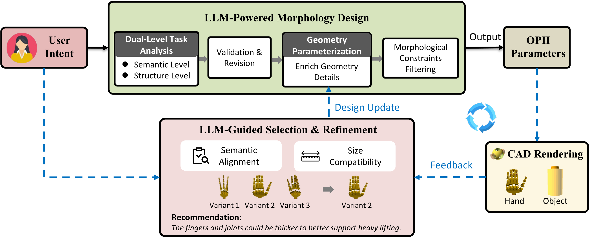
The Lang2Morph pipeline (Qiao et al. 2025). We reproduced it in RoboTL: the OPH parameters compile to a MuJoCo hand.
Reproducing Lang2Morph: the LLM proposes a hand
class Lang2MorphDesigner(Agent): # one shared history
@Template.define
def design_grammar(self, schema: SemanticSchema
) -> StructureGrammar:
"""...then call assess_grammar for a feasibility check."""
raise NotHandled
@Template.define
def assess_grammar(self, grammar: StructureGrammar,
schema: SemanticSchema
) -> LLMValidationAssessment:
raise NotHandled
@Template.define
def design_geometry(self, schema, grammar, prior
) -> ReducedHandConfig:
raise NotHandled
@Template.define
def _evaluate(design_context, views) -> SelectionResult: # assess the design
raise NotHandled
with handler(LiteLLMProvider()), handler(RetryLLMHandler()):
schema = designer.generate_semantic_schema(task, grasp, views)
for _ in range(n_iters): # refine ~5x
grammar = designer.design_grammar(schema) # calls assess_grammar
hand = designer.design_geometry(schema, grammar, prior)
best = _evaluate(design_context, views) # feedback, next roundReducedFingerConfig checks slenderness = length / joint_diameter in [1, 8]; a bad geometry raises, and RetryLLMHandler feeds the error back.Result visualization
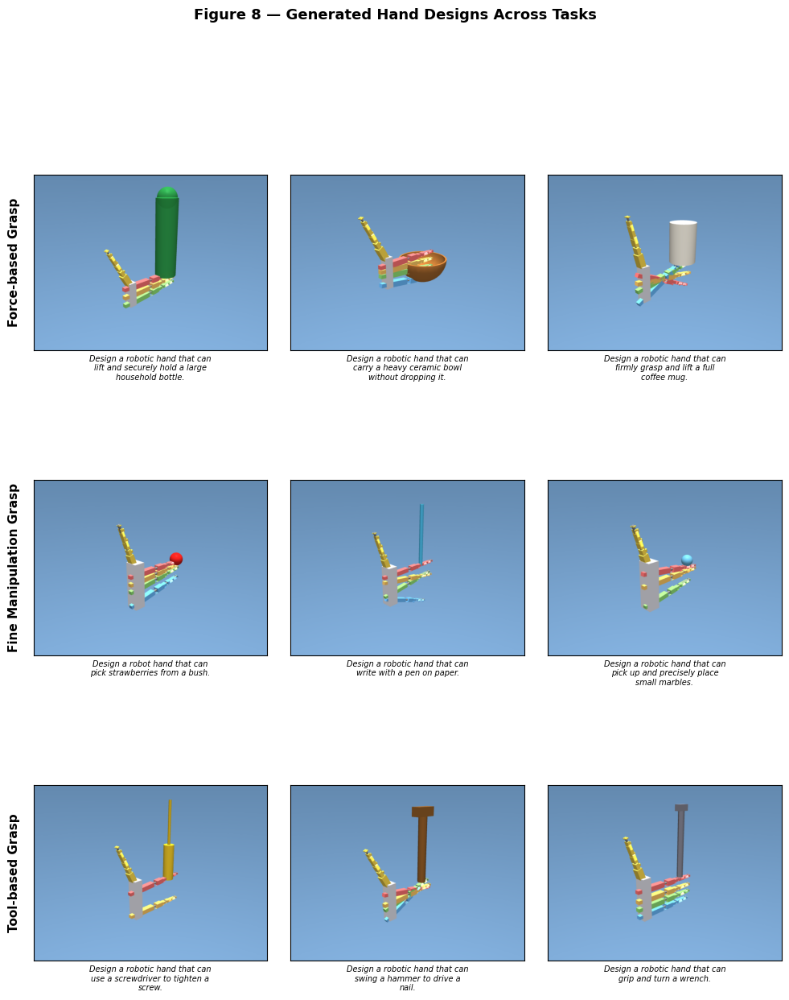
Reproduction rollouts: the designed hands grasping.
Morphology Validity Rate: the paper vs ours
with handler(LiteLLMProvider()), handler(RetryLLMHandler()):
hand = designer.design_geometry(...)Best paper MVR 0.82 (GPT-4o-mini).
Grasp Force Level: the paper vs ours
A morphology proxy from five structural factors (not physical force). Same ordering across task types.
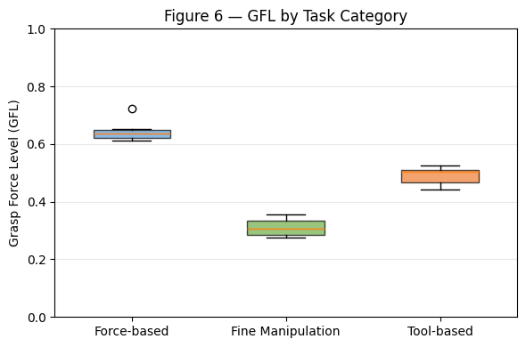
Our reproduction (RoboTL): GFL by task category.
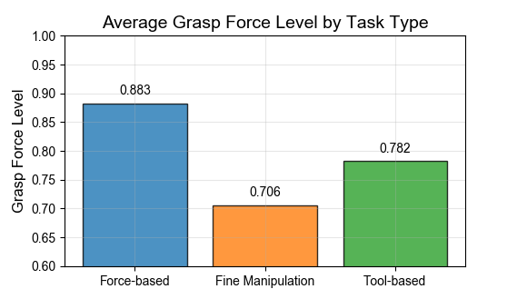
Lang2Morph paper (Qiao et al., Fig. 6).
Lang2Morph is just morphology. What about control?
Control is also a program synthesis problem
robotl/examples/loss_designer.py: a Template returns a function. The LLM writes aux_losses; it is executed and, if invalid, retried.
class LossDesigner(Agent):
@Template.define
def design_losses(self, env_source, robot_source,
task, sim_feedback
) -> Callable[[Component], dict]:
"""Write ONE function: def aux_losses(env) -> dict
In scope, nothing else: Nullify, Maximize, Minimize,
Equalize, KeepAbove, KeepBelow, sim_time, jnp.
No imports, no annotations; runs JAX-traced."""
raise NotHandled
with handler(LossEvalProvider()), handler(
RetryLLMHandler(stop=stop_after_attempt(4))):
aux = agent.design_losses(env_src, robot_src, task, fb)def synthesize(component): return build_design(component) (undefined name); the eval handler raised, and RetryLLMHandler fed the error back.@defcomponent
def CubeSpinEnv(self, robot: Component, spin_axis=...):
...
world_angvel = self.cube.axes @ self.cube.angvel
self.losses = {
"nolinvel": Nullify(self.cube.linvel, weight=0.1),
"nodrop": KeepAbove(self.cube.pos[2], 0.1, weight=10.0),
"onaxis": Maximize(jnp.abs(world_angvel @ spin_axis),
weight=0.01),
"offaxis": Nullify(jnp.cross(world_angvel, spin_axis),
weight=0.01),
}The same run, rendered: the LEAP v1 hand spinning the cube
Our challenge task
Design a robot that can reach into the box and manipulate an object inside.
- Requires a dexterous manipulator that can fit through the narrow entrance and then unfold.
- Mounted on an arm with reach.
- Target: a hexagonal knob inside the box.
- Goal: turn it 90° counter-clockwise.
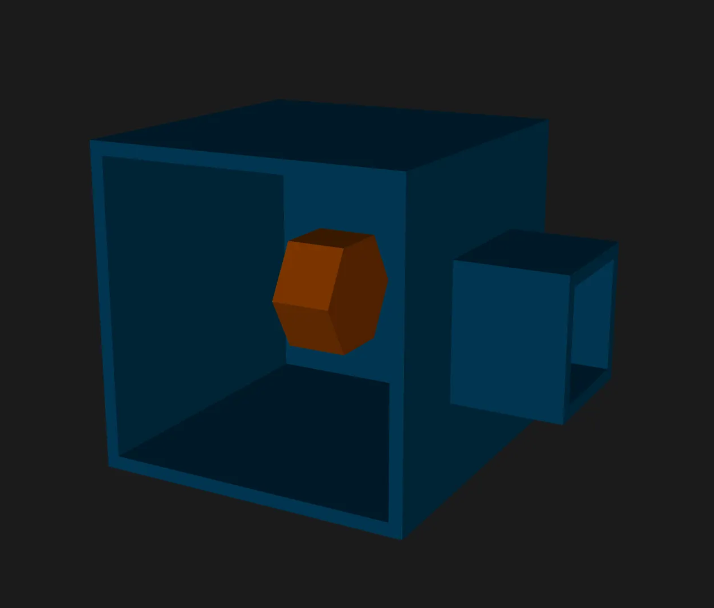
Baseline: control of the stock robot
How it should look like with a cartoonish hand.
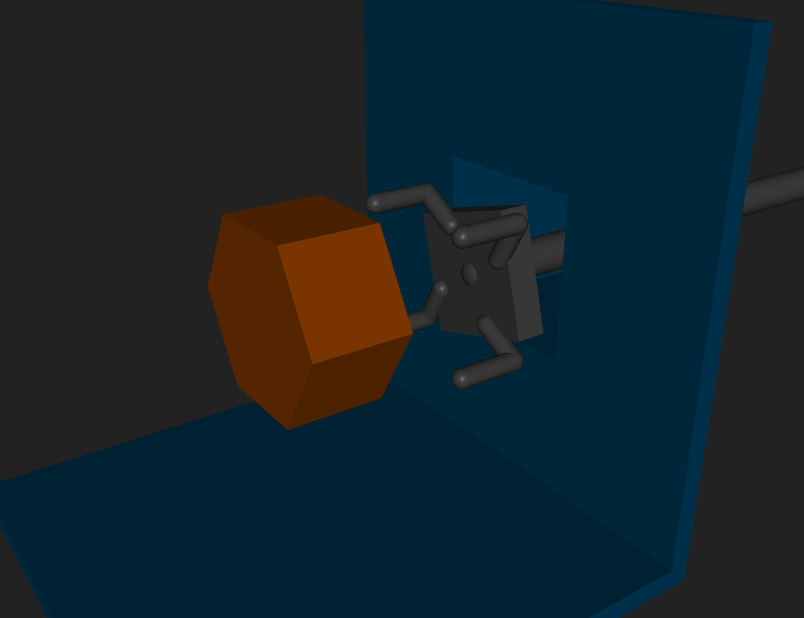
Co-designed robot, no container
Now we let the LLM design the morphology too. Without the container, codesign works: the system finds a workable manipulator and turns the knob.
Co-designed robot, with container · it breaks
The hand does not fit into the box.
The loss stays the same. The LLM has no signal that anything is improving.
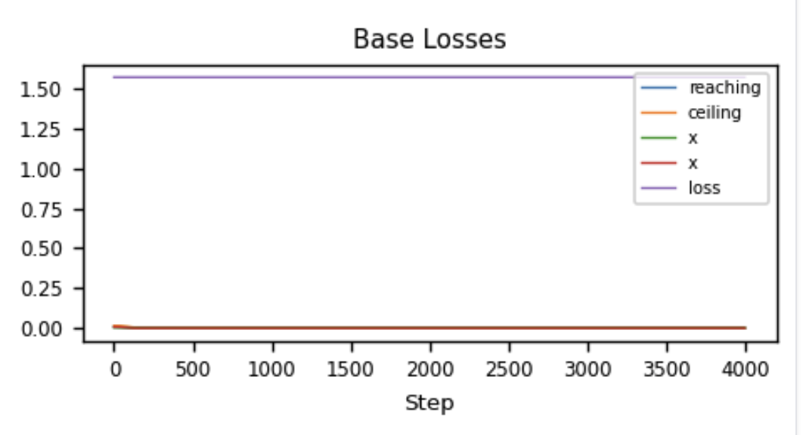
Our LLM Co-Design Pipeline
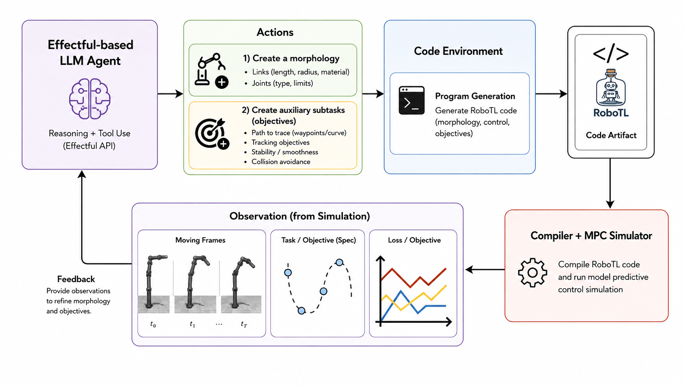
Watching the LLM Progress
arm_gain / hand_gain as tuned
arm_gain / hand_gain as tuned
arm_gain / hand_gain as tuned
arm_gain / hand_gain as tuned
Each round, the LLM rewrites the losses
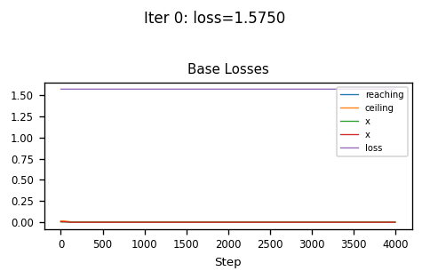
Iter 0 (2/10): no auxiliary losses. Base loss flat at 1.58.
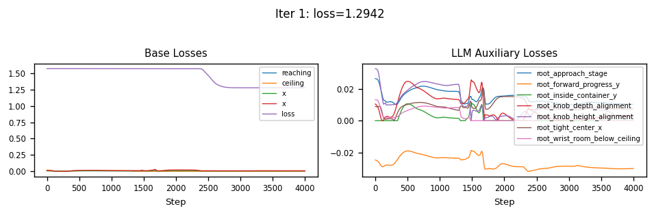
Iter 1 (6/10): 7 aux terms. Loss dips to 1.29.
# what the LLM wrote (iteration 1):
def aux_losses(env) -> dict:
tip = env.robot.tip.pos
target = env.target.pos
entrance = jnp.array([0.0, 1.1, target[2]])
mid = 0.5 * (entrance + target)
t = sim_time()
guide = jnp.clip((t - 1.5) / 1.5, 0.0, 1.0)
stage_point = (1.0 - guide) * entrance + guide * mid
return {
"approach_stage": Equalize(tip, stage_point, weight=0.03),
"forward_progress_y": Maximize(tip[1], weight=0.02),
"inside_container_y": KeepAbove(tip[1], 1.22, weight=0.04),
"knob_depth_alignment": Nullify(tip[1] - target[1], weight=0.05),
"knob_height_alignment": Nullify(tip[2] - target[2], weight=0.04),
"tight_center_x": Nullify(tip[0], weight=0.03),
"wrist_room_below_ceiling": KeepBelow(tip[2], 0.42, weight=0.02),
}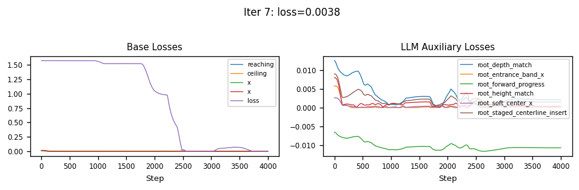
Iter 7 (10/10): refined terms. Base loss collapses to 0.004.
# what the LLM wrote (iteration 7):
def aux_losses(env) -> dict:
tip = env.robot.tip.pos
target = env.target.pos
entrance = jnp.array([0.0, 1.1, target[2] - 0.01])
pregrasp = jnp.array([0.0, target[1] - 0.03, target[2]])
t = sim_time()
s1 = jnp.clip(t / 1.0, 0.0, 1.0)
s2 = jnp.clip((t - 1.0) / 1.5, 0.0, 1.0)
guide = (1.0 - s1) * entrance + s1 * ((1.0 - s2) * pregrasp + s2 * target)
return {
"staged_centerline_insert": Equalize(tip, guide, weight=0.012),
"forward_progress": Maximize(tip[1], weight=0.008),
"depth_match": Nullify(tip[1] - target[1], weight=0.02),
"height_match": Nullify(tip[2] - target[2], weight=0.015),
"soft_center_x": Nullify(tip[0], weight=0.006),
"entrance_band_x": KeepBelow(jnp.abs(tip[0]), 0.05, weight=0.015),
}Iteration 7, the design that worked
Co-designed: reaches into the box and turns the knob 90 degrees. loss 1.625 → 0.004.
# what the LLM wrote (iteration 7):
def aux_losses(env) -> dict:
tip = env.robot.tip.pos
target = env.target.pos
entrance = jnp.array([0.0, 1.1, target[2] - 0.01])
pregrasp = jnp.array([0.0, target[1] - 0.03, target[2]])
t = sim_time()
s1 = jnp.clip(t / 1.0, 0.0, 1.0)
s2 = jnp.clip((t - 1.0) / 1.5, 0.0, 1.0)
guide = (1.0 - s1) * entrance + s1 * ((1.0 - s2) * pregrasp + s2 * target)
return {
"staged_centerline_insert": Equalize(tip, guide, weight=0.012),
"forward_progress": Maximize(tip[1], weight=0.008),
"depth_match": Nullify(tip[1] - target[1], weight=0.02),
"height_match": Nullify(tip[2] - target[2], weight=0.015),
"soft_center_x": Nullify(tip[0], weight=0.006),
"entrance_band_x": KeepBelow(jnp.abs(tip[0]), 0.05, weight=0.015),
}Codesigning morphology and control
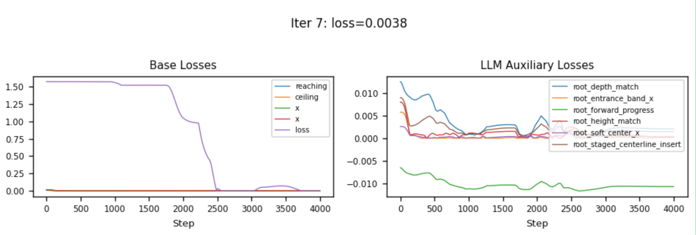
Designed objective: none can be missed
Ablation: keep the same morphology, but remove the designed objective. The system fails. Both pieces matter together.
Some successes
Some limitations
Today the env hands over state directly; real deployment needs to estimate it from sensors.
Friction, timestep, and contact solver all picked by hand for stable contact. Nothing here has touched real hardware yet.
| friction | knob 0.10 / slide 0.05 / finger 0.01 |
| dt | 0.005 ⟶ 0.002 |
| solref | 0.01 ⟶ 0.02 |
When does LLM-based reward design stop working?
The team
The R-ADA team, Basis Research Institute and collaborators
Future work: the baby robot
On real hardware nobody hands you the state. The robot must describe the scene before it can plan in it.
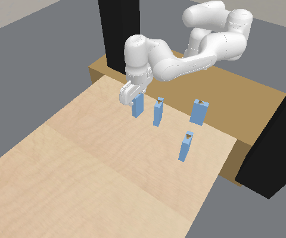
Scene capture is program synthesis: perception is inferring the description's parameters.
Bi-level Planning through Predicators
ExoPredicator (ICLR'26), boil water with jugs: a successful run of the plan these skills compose.